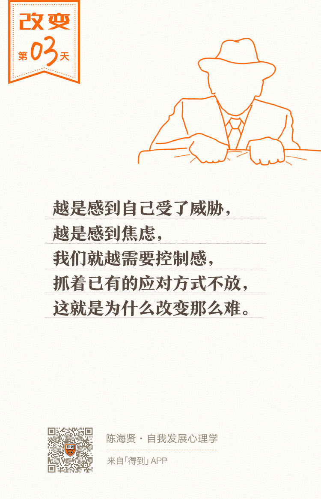

欢迎来到《自我发展心理学》。
你好，我是陈海贤。
今天我们继续来讨论，行为改变为什么那么难。
上节课，我们讲到了改变的本质是创造新经验，并通过强化，把它变成新的习惯。这听起来很简单，但在真实生活中却很难。
为什么？因为旧经验太过牢固。所以要击败旧经验，我们就必须理解它的工作原理。
今天，我们就来讲讲让旧经验根深蒂固的最重要的心理机制——心理舒适区。
心理舒适区本质：熟悉的应对方式
心理舒适区这个词，你一定听过。平时我们常说，要有所改变，就要走出心理舒适区。
可是，究竟什么是心理舒适区呢？你可能会想，“舒适区”指的就是舒适的环境嘛。
比如，有人在小城市找了一份稳定安逸的工作，虽然工作没有太大的成就感，但是比较舒适，所以就不想再挑战自己，突破自己了，这就是心理舒适区。
其实并不全是。
首先，心理舒适区并不一定意味着舒适。
举个例子。我们都认同外面的环境要比监狱里舒适。可是在电影《肖申克的救赎》里，老布就不这么觉得。
他在监狱里被关押了50年，这几乎是人的一生了。当他获知自己即将刑满释放时，不但没有满心欢喜，反而差点精神崩溃。因为他已经熟悉了这座监狱，离不开了。
为了让自己继续在监狱里呆着，老布不惜举刀杀人。再一次出狱的时候，他甚至选择了自杀。
监狱这个环境，虽然不舒服，但这是他的心理舒适区。
从老布的例子你可以看到，有时候，你处于一个很痛苦，很艰难的环境中，仍然不愿意改变，这也是一种心理舒适区，因为你熟悉它。
其次，心理舒适区意味着熟悉的环境吗？其实也不是。
我有个朋友，有一段时间觉得自己生活过得不好，希望能有所改变，所以想换个环境，先去国外读个书。他想听听我的意见。
生活遇到瓶颈，换个环境重新开始，是很多人都会有的想法，也许你也有过。
我就跟他说：“出国长长见识是挺好的。可是，改变熟悉的环境，并不意味着我们就能改变了。”
我见到过一些人，换了个地方，换了份工作，马上就有了脱胎换骨的变化。我也见过很多人，去过很多国家，做过很多工作，却一直没什么变化。
我们每个人都带着自己长长的过去，这些过去不在环境里，而在我们的头脑里，在我们的所思所想中，在我们和环境的互动中。如果这些不改变，光改变环境，是没有用的。
所以，真正的心理舒适区，说的不是熟悉的环境，而是我们熟悉的应对环境的方式。走出心理舒适区，说的不是我们走出熟悉的环境，而是改变我们的应对方式。
只有改变我们的应对方式，才算真正走出了心理舒适区。那么，什么是应对方式呢？
其实，所谓的应对方式，就是指我们怎么处理生活中那些困难的事情。
心理学上有一个常用的量表，叫应对方式量表，归纳了六种常用的应对方式：
解决问题；
自责；
求助；
幻想；
退避；
合理化。
对我们来说，应对方式有两层含义。
第一层，行为上的应对，也就是对具体事情的应对。
比如：遇到危险时，选择战斗还是逃跑；在工作上遇到困难的任务，选择解决问题，还是拖延。
第二层，对内心的情绪应对。
举个例子：妈妈带小孩去动物园看狮子，孩子看见狮子都是会害怕的。
你看，三个孩子都害怕狮子，但他们应对这种害怕的方式并不一样。这是对情绪的应对方式。
心理舒适区带来控制感
现在我们知道了心理舒适区是我们最熟悉、最常用的应对环境和问题的方式。
那么，这个舒适区到底有什么好处，让我们想要不停用它，明明想要改变，却总也改不了呢？
简单来说，它带来的最大的好处就是控制感。
“控制感”是每个人的基本需要，也是人安全感的来源。我们大部分的应对方式，最初是用来应对焦虑的。
我们越是感到自己受了威胁，感到焦虑，就越需要控制感，会越抓着已有的应对方式不放。
而走出心理舒适区则意味着，你放下了原来所使用的应对焦虑的武器，重新去面对焦虑，寻找新的适应办法，这是情感这头大象很难忍受的。
所以，对焦虑感的回避和对控制感的需要，经常会让大象重新回到它所熟悉的应对方式上来，这就是为什么改变这么难。
有一个来访者因为焦虑来找我。
她的丈夫之前在国外深造，为此他们异地了6年。最近，丈夫回国了，到了上海工作，她也跟着搬去了上海。
但是，最近她一直纠结是应该回到原来的城市，还是继续留在上海。她觉得是工作的原因。可是讨论着讨论着，我发现，到上海发展的机会和前景都比留在原来的城市好，她也很认同这一点。
那她为什么还执意要回去呢？她叹了口气说：“我担心先生跟我离婚。”
我知道她最近才刚结婚，于是我问她：“你和先生关系不好吗？”
她说不是，她和先生很恩爱。
我又问：“是你们的生活有什么困难吗？”
她说也没有，都很好，可就是不安。
后来，我们聊到了她的成长经历。
原来，她从小和父母聚少离多，父母忙着做生意，经常不在家。
她印象最深刻的一个场景是：有一次，她坐在家门口，孤孤单单地等在县城做生意的爸妈回家，直到天空一点点黑下来，父母也没有回来。类似的情况有很多。
我问她，是怎么适应这种分离的，她说不知道，就是慢慢习惯了。
可我知道，这是很让人焦虑的场景，如果不是发展出了一种特别的应对方式，她没法习惯。
后来她读大学，有了男朋友，别人总觉得异地恋不靠谱，她却很适应。
其实那时候，她心里想的是：反正有一天对方会离开。
但爱情最终战胜了时间和距离。今年丈夫学成回国，他们结婚了。可是，当两人真正在一起的时候，她却开始感觉不安，开始纠结要不要回原来的城市，重新开始两地分居的生活。
而且，她的头脑里发生了巧妙的转换，直到我们说起这一段，她还以为自己纠结的是哪个城市更有利于她的职业发展。
我问她，现在的生活怎么让她不安了。她说，好是好，可谁知将来会发生什么不好的事情，彻底破坏现在的一切。
不知道你有没有发现，这个来访者因为成长经历发展出来的应对方式就是：不对关系抱有期望，随时准备离开，过一个人的生活。
这种应对方式不适用于两个人在一起的生活，而适用于处理两个人不在一起时，所产生的分离焦虑。但现在，为了配合这种应对方式，她宁愿选择两地分居的生活。
因为这种应对方式她最熟悉，能让她有控制感、安全感。
这是心理舒适区最特别的地方，我们会用自己的应对方式去建构生活，而不是根据生活选择一种合适的应对方式。
明明她的环境已经不需要她这么焦虑，而她却还在为分离做准备。这是很多悲剧的来源。
在这里，我想请你思考一下：如果她的爱人也用类似的应对方式会怎么样？
那他就很容易把她的犹豫，解读成要离开的信号，他也会为分离做准备，以避免自己受伤害。这样，分离的焦虑就会变成现实，两个人就会真的越行越远。
幸运的是，丈夫对他们两人的关系很有安全感。他觉得两地分居的生活根本不是常态，两个人在一起才是常态。
这也是丈夫的心理舒适区，所以他包容了她的不安。
为了逐渐改变她的应对方式，有一次，我把她和她丈夫一起请到咨询室来，我们一起给妻子的焦虑取了一个名字，叫“小闹铃”。
当妻子再有不安、想要离开时，她就会告诉丈夫：“我的小闹铃又响了。”
丈夫会轻轻拧妻子的耳朵，假装把它关掉。
最终，妻子决定留在上海。
离开咨询室的时候，她跟我说：“陈老师，您知道吗？不只是感情，以前，任何好的东西，工作、荣誉、生活，我都不敢要，哪怕得到了，也会觉得不安，觉得这不是我的。现在，我慢慢开始不那么想了。”
觉得自己配不上好的东西，这也是另一种心理舒适区。
而她开始走出了自己的心理舒适区，用新应对方式生活。这并不能保证她和丈夫以后一定不会分离，没有人能做这样的担保。
但新的应对方式，能够让她去享受现有的幸福和快乐，并从中积累新的经验。这就是改变的意义。
总结一下，这节课我们讲了什么是真正的心理舒适区，知道了心理舒适区的本质是熟悉的应对方式所带来的控制感，正是对控制感的渴求，让我们难以改变。
在下一讲中，我们将学习一种很实用的技能，给自己的心理舒适区拍个X光片，看清它精细的内部结构。
我们下一讲见。
